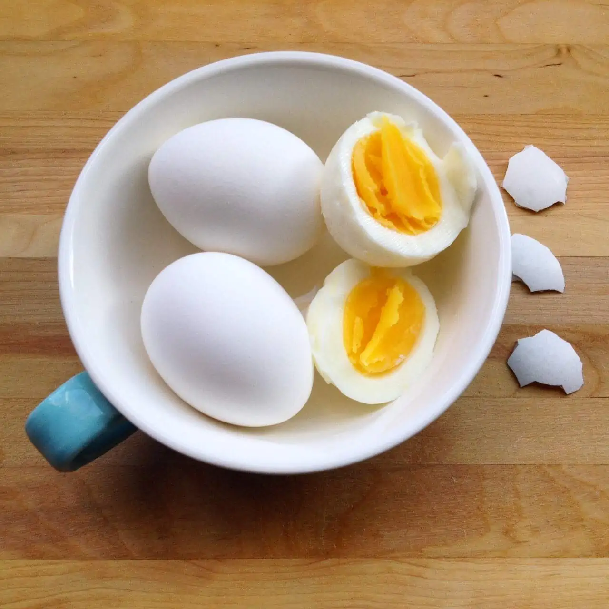

Home
Fried Egg:

A boiled egg is a superb dish that is known for it's healthiness and yumminess. We will be making a good soft boiled egg!
Ingredients:
- Egg
- Small pot
- Salt
- Black Pepper
- Water
Steps:
- Turn the heat for the Pot
- Add enough water to fully submerge egg
- Put the egg inside without cracking
- Now let it stay on medium heat for 8 minutes
- The water will be boiling and once 8 minutes has passed, take out the egg
- Turn off the heat
- Let the egg cool a bit and then unpeel it
- Now add a pinch of Salt and Black papper
- That's it! a delicious and very easy to make dish!